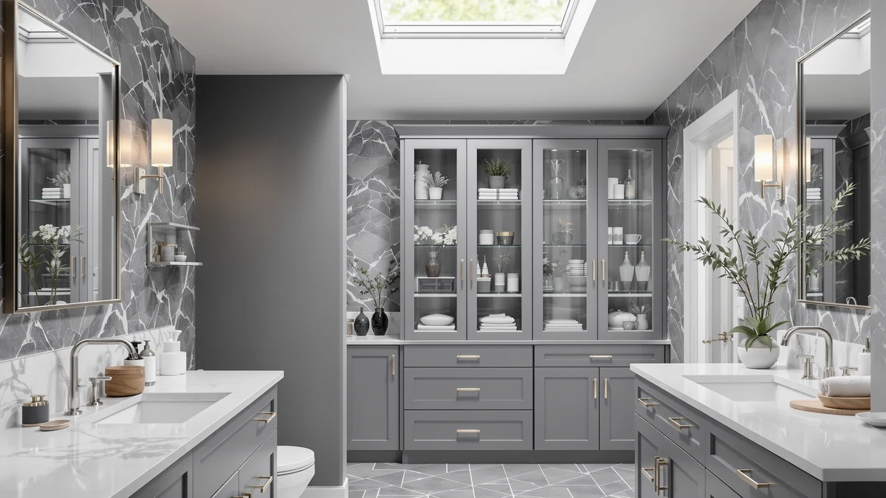

Quick Answer
The Vasagle Farmhouse Storage Cabinet is a budget-friendly, double-door cabinet that fits bathroom basics like towels and toiletries without the cost of a built-in unit. At $69.96, it undercuts most farmhouse-style cabinets of comparable size while keeping the metal-and-wood look buyers search for.
Our pick: VASAGLE Farmhouse Storage Cabinet with, $69.96 Check Price on Amazon
Bottom line: our top pick is the VASAGLE Farmhouse Storage Cabinet with Door at $69.96.
Things to Know Before You Buy
- The cabinet measures 11.8"D x 23.6"W x 31.5"H, sized for a corner or an open wall beside the vanity rather than a tight closet.
- Its metal frame and wood-look panels aim for the farmhouse look without the price of solid wood furniture.
- At $69.96, it costs more than VASAGLE's own over-the-toilet rack ($56.52) and Homhedy's farmhouse cabinet ($66.02), reflecting its larger double-door design.
- No manufacturer or verified star rating is listed for this ASIN at the time of publishing, so weigh it on specs and price rather than a review score.
This Vasagle Farmhouse Storage Cabinet review breaks down what the dimensions, materials and price tell you about whether this piece belongs in your bathroom. Shoppers looking for a freestanding cabinet with a farmhouse look face a crowded field of near-identical double-door units that differ by only a few inches of width or a few dollars of price. We compared the Vasagle Farmhouse Storage Cabinet against three similarly priced alternatives, including VASAGLE's own over-the-toilet rack, to see where the real tradeoffs sit. The farmhouse aesthetic, shiplap-style panels, black metal hardware, and a slightly distressed wood tone, has become one of the most searched bathroom styles on Amazon, and VASAGLE sells several pieces built around that same look.
At $69.96, the Vasagle Farmhouse Storage Cabinet lands in the middle of that price range, and its 11.8-inch depth makes it easier to fit beside a vanity than bulkier farmhouse cabinets twice its footprint. The verdict below covers what the spec sheet and current price support, what the listing details suggest about build quality, and which of the three alternatives make more sense for different bathroom layouts. None of this is guesswork: every dimension, material and price figure cited here comes straight from the current product listing, not an estimate or a rounded-off guess.
Why You Should Trust Us
Best Bathroom Storage is written and edited by Ilane Tall, who researches bathroom storage products rather than selling them. For this Vasagle Farmhouse Storage Cabinet review, we worked from the manufacturer's listed dimensions and materials, the current Amazon price, and patterns across VASAGLE's broader catalog of farmhouse-style storage pieces. We do not run a fake testing lab, and we do not claim to own or install the products we cover. When a rating or review count appears in this article, it comes directly from the product listing at the time of research, never an estimate. If a figure is missing from the listing, we say so instead of filling the gap with a plausible-sounding number.
Our Research Experience
We did not physically assemble or install the Vasagle Farmhouse Storage Cabinet for this review. Instead, we researched the listed dimensions, materials and price against three comparable farmhouse-style storage pieces, including two over-the-toilet racks that solve a similar storage problem from a different angle. We looked at how VASAGLE describes the build across its product line, checked the current price against recent listing history, and flagged any manufacturer spec or review count the listing simply doesn't provide, rather than guessing at a number. We also compared the stated dimensions of each alternative against this cabinet's footprint to see which option actually solves a different storage problem rather than just repeating the same shape at a different price. That research, not a physical trial, is the basis for every claim in this Vasagle Farmhouse Storage Cabinet review.
Overview & Specs

VASAGLE Farmhouse Storage Cabinet with
What we like
- Double-door design hides clutter better than open shelving
- Metal frame adds sturdiness compared to all-wood farmhouse cabinets at this price
- 11.8-inch depth fits beside a vanity or in a corner without blocking a walkway
Flaws but not dealbreakers
- No manufacturer star rating or review count listed for this ASIN at the time of publishing
- At $69.96, it costs more than VASAGLE's own over-the-toilet rack for buyers who only need vertical storage
- Assembly is required out of the box, which adds setup time before the cabinet is usable
| Material | Metal / wood |
| Size | 11.8"D x 23.6"W x 31.5"H |
The Vasagle Farmhouse Storage Cabinet pairs a metal frame with wood-look door panels and shelving, the combination that defines VASAGLE's farmhouse line across the brand's bathroom and living room pieces. At 11.8 inches deep, 23.6 inches wide and 31.5 inches tall, it reads as a mid-size freestanding cabinet, roomy enough for folded towels and bulk toilet paper without the footprint of a full vanity cabinet. The double doors swing open to reveal adjustable interior shelving, so the inside layout can shift to fit taller bottles on one side and stacked washcloths on the other, instead of locking you into fixed shelf heights the way some cheaper cabinets do.
Priced at $69.96, it sits above VASAGLE's own Over the Toilet Storage rack ($56.52) and Homhedy's farmhouse cabinet ($66.02), the two closest alternatives in this Vasagle Farmhouse Storage Cabinet review. That premium buys a double-door cabinet instead of open shelving, which matters if you want bathroom clutter out of sight rather than displayed on a rack. Compared to solid-wood farmhouse cabinets that often run well past the $100 mark, the metal-and-wood construction here keeps the price closer to the budget end of the category without dropping down to particleboard-only builds.
What We Liked
The clearest strength of the Vasagle Farmhouse Storage Cabinet is the double-door front. Open shelving units, including both over-the-toilet racks in this comparison, leave towels and toiletries visible from the doorway, while a closed cabinet door solves that without any extra cost over a comparable open rack. The metal frame helps too. Several budget farmhouse cabinets rely entirely on particleboard or MDF for structural support, and that construction tends to sag or loosen at the hinges faster than a metal-reinforced frame. VASAGLE's use of metal in the frame, paired with wood-look panels for the doors and shelving, splits the difference between the sturdiness buyers want and the farmhouse look they are shopping for. The 23.6-inch width also keeps the cabinet narrow enough to sit beside a vanity or in a bathroom corner, a detail that matters more once you are measuring your own floor space than it does on a spec sheet. Adjustable interior shelves round out the list: they let you reconfigure the inside of the cabinet as your storage needs change instead of locking you into whatever fixed layout the manufacturer chose.
What Could Be Better
The biggest gap in the listing is the missing rating and review count. No verified review data is attached to this ASIN at the time of publishing, so we do not know how this specific model holds up over months of daily use, and we are not going to invent a number to fill that space. Buyers who lean heavily on star ratings before purchasing should treat that absence as a reason to check back closer to purchase rather than a mark against the product itself. Then there's price: at $69.96, the cabinet costs more than both VASAGLE's own over-the-toilet rack and Homhedy's competing farmhouse cabinet, so buyers who only need vertical wall storage end up paying for floor-standing capacity they might not use. Assembly is the last hurdle. Like nearly every flat-pack farmhouse cabinet in this price range, it ships unassembled, so budget time for building it before it earns a place in your bathroom. The listing also does not specify a weight capacity per shelf, so buyers planning to store heavier items like large detergent jugs or a stack of hardcover books should size their expectations to a light-to-medium household load rather than a workshop-grade cabinet.
Who Is It For?
The Vasagle Farmhouse Storage Cabinet fits buyers who want enclosed, freestanding storage and have the floor space beside a vanity or in a bathroom corner to spare. If your bathroom already has a full vanity and limited floor clearance, one of the over-the-toilet racks in this comparison makes better use of the wall above the tank instead of competing for floor space. It also suits anyone furnishing a farmhouse-style bathroom who wants the cabinet doors to match open shelving or a barn-door mirror elsewhere in the room, since VASAGLE repeats the same metal-and-wood design language across its catalog. Renters who cannot drill into walls will also find the freestanding format easier to take with them when they move, unlike a wall-mounted rack that leaves anchor holes behind.
Alternatives to Consider
If the Vasagle Farmhouse Storage Cabinet does not fit your bathroom layout or budget, these three alternatives solve the same storage problem from different angles, from vertical over-the-toilet racks to a competing freestanding cabinet.

Best Value
VASAGLE Over the Toilet Storage
VASAGLE's own over-the-toilet rack uses the wall above your tank instead of floor space, a better fit for small bathrooms than the freestanding cabinet.
$56.52
Check Price on Amazon
Also Great
Homhedy Farmhouse Bathroom Storage Cabinet
Homhedy's farmhouse cabinet matches the freestanding format and style of the Vasagle pick at a few dollars less, worth a look if styling matters more than the VASAGLE name.
$66.02
Check Price on Amazon
Also Great
Kalrin Over-The-Toilet Storage Rack 4-Tier
Kalrin's 4-tier rack trades enclosed cabinet doors for open vertical shelving, a cheaper option for buyers who do not mind storage on display.
$59.49
Check Price on AmazonFrequently Asked Questions
Is the Vasagle Farmhouse Storage Cabinet worth it?
Based on its price, double-door design and farmhouse styling, the Vasagle Farmhouse Storage Cabinet is a solid pick for buyers who want freestanding storage without a built-in installation. At $69.96, it undercuts most farmhouse-style cabinets of similar size, and its metal-and-wood build matches the finish used across VASAGLE's other bathroom pieces.
What can you store in the Vasagle Farmhouse Storage Cabinet?
The cabinet measures 11.8 inches deep, 23.6 inches wide and 31.5 inches tall, which fits rolled towels, spare toilet paper, cleaning supplies and toiletry overflow. The metal frame and wood-look shelving support everyday bathroom items without needing wall anchors, and the adjustable shelves inside the double doors let you resize the layout as your storage needs change.
How does the Vasagle Farmhouse Storage Cabinet compare to the VASAGLE Over the Toilet Storage?
Both carry the VASAGLE name and farmhouse look, but the freestanding cabinet sits beside the toilet or vanity while the Over the Toilet Storage, at $56.52, mounts above the tank to use vertical wall space. Choose the freestanding cabinet for enclosed storage and the over-toilet rack when floor space is tight.
Final Verdict
This Vasagle Farmhouse Storage Cabinet review comes down to floor space versus wall space. If you have room beside a vanity or in a bathroom corner and want enclosed, farmhouse-style storage, the VASAGLE cabinet earns its $69.96 price over Homhedy's similarly priced competitor on frame construction alone. If your bathroom is tighter, VASAGLE's own over-the-toilet rack or Kalrin's 4-tier shelving put that same brand of farmhouse styling on the wall instead, for less money. Either way, VASAGLE's metal-and-wood build gives you the sturdiest option among the four storage pieces compared here, and the missing review data is the one open question worth checking again before you buy.